Para a equipe de desenvolvimento. Defeitos do módulo Estoque encontrados nos testes de tela, com o passo a passo para reproduzir, as capturas, o trecho do código onde o problema está e uma sugestão de correção. Cada defeito traz também como confirmar a correção (o caso de teste a repetir). Atualizado em 10/10/2026.
Resumo
12 defeitos registrados, 12 em aberto. Pendentes por gravidade: 3 alta · 6 média · 3 baixa.
Gravidade: Alta = afeta a qualidade do produto, a conformidade com a ANVISA ou impede uma tarefa; Média = atrapalha, mas há como contornar; Baixa = incômodo ou texto.
Situação: Aberto: ainda não corrigido · Em correção: um desenvolvedor assumiu · Corrigido: o desenvolvedor entregou, falta o reteste · Validado: o reteste passou.
| Id | Defeito | Gravidade | Situação | Tela | Encontrado em |
|---|---|---|---|---|---|
| DV-EST-014 | Lote com validade vencida é aceito no recebimento, sem aviso | Alta | Aberto | Estoque › Estoque › Recebimento de Material › Nota Fiscal › Item › Lote | CT-EST-186, 08/10/2026 |
| DV-EST-015 | Finalizar a conferência dá "Erro ao redistribuir quantidade dos volumes", mas a nota fica marcada como conferida | Alta | Aberto | Estoque › Estoque › Conferência de Recebimento | CT-EST-191 e CT-EST-193, 08/10/2026 |
| DV-EST-016 | Endereçamento mostra "sucesso", mas nada foi gravado: lote sem saldo, sem histórico e sem análise no CQ | Alta | Aberto | Estoque › Estoque › Endereçamento de Material | CT-EST-194 e CT-EST-197, 08/10/2026 |
| DV-EST-001 | Código do lote perde os hífens: "TESTE-LOTE-001" vira "TESTELOTE001" | Média | Aberto | Estoque › Estoque › Recebimento de Material › Nota Fiscal › Item › Lote | Preparação do recebimento; reconfirmado no CT-EST-187 em 08/10/2026, 07/10/2026 |
| DV-EST-002 | Quantidade do lote: digitar 100 grava 0,100 | Média | Aberto | Estoque › Estoque › Recebimento de Material › Nota Fiscal › Item › Lote | Preparação do recebimento; reconfirmado no CT-EST-187 em 08/10/2026, 07/10/2026 |
| DV-EST-004 | Checklist de inspeção veicular não mostra as opções de resposta e salva "Aprovado" sem nenhuma resposta | Média | Aberto | Estoque › Estoque › Checklist de Inspeção Veicular | Preparação do recebimento; reteste CT-EST-181 em 08/10/2026, 07/10/2026 |
| DV-EST-010 | "Confirmar recebimento" falha com erro genérico quando o item não tem almoxarifado de identificação | Média | Aberto | Estoque › Estoque › Recebimento de Material (botão CONFIRMAR RECEBIMENTO) | Confirmar recebimento dos recebimentos 00013, 00014 e 00016, 08/10/2026 |
| DV-EST-011 | Checklist com parecer "Reprovado" aparece na lista de veículos para usar no recebimento | Média | Aberto | Estoque › Estoque › Recebimento de Material (campo Veículo (Checklist)) | CT-EST-182, 08/10/2026 |
| DV-EST-012 | Recebimento é salvo sem checklist de inspeção, sem placa e sem motorista | Média | Aberto | Estoque › Estoque › Recebimento de Material | CT-EST-183, 08/10/2026 |
| DV-EST-003 | Sem a Data do Recebimento, o botão SIM não faz nada e não mostra mensagem | Baixa | Aberto | Estoque › Estoque › Recebimento de Material | Preparação do recebimento (observação 5), 07/10/2026 |
| DV-EST-006 | Na tela do Item, alguns botões e marcações recarregam a tela e apagam os números digitados | Baixa | Aberto | Estoque › Cadastros › Item | Preparação do item TESTE MATERIA PRIMA (observação 4), 07/10/2026 |
| DV-EST-013 | Nota fiscal sem a série não grava e não avisa; mensagens apontam o campo errado | Baixa | Aberto | Estoque › Estoque › Recebimento de Material › Nota Fiscal | CT-EST-184, 08/10/2026 |
DV-EST-014
Lote com validade vencida é aceito no recebimento, sem aviso
| Gravidade | Situação | Tela | Caso de teste | Encontrado em | Norma afetada |
|---|---|---|---|---|---|
| Alta | Aberto | Estoque › Estoque › Recebimento de Material › Nota Fiscal › Item › Lote | CT-EST-186 | 08/10/2026 (rodada de 08/10/2026, etapa 1 (recebimento e quarentena)) | RDC 658/2022, art. 189 (só usar material dentro da validade) |
O que acontece
Na tela Recebimento de Materiais - Lote, um lote com Data de Validade de ontem (07/10/2026, teste feito em 08/10/2026) foi gravado com "Inclusão realizada!" e aparece na grade de lotes do item, sem recusa e sem alerta. O código só confere se a validade foi informada e se é uma data válida; não compara com a data de hoje nem com a data do recebimento.
Como reproduzir
- Abrir Estoque › Recebimento de Material, abrir o recebimento 00015, a NF 9003 e o item 1 (
TST0001 - TESTE MATERIA PRIMA). - Clicar em INCLUIR LOTE.
- Preencher Fabricante
TESTE PJ FARMACÊUTICA LTDA, Código do LoteTESTELOTE004, Data de Validade com a data de ontem (no teste,07/10/2026), Quantidade50,000, Nº Volumes1. - Clicar em SALVAR.
Dados de teste usados: Recebimento 00015 (placa TST-5555, mantido aberto), NF 9003, item TST0001 - TESTE MATERIA PRIMA, lote TESTELOTE004 (50,000, validade 07/10/2026).
Esperado e obtido
| Esperado | Obtido |
|---|---|
| Recusar o lote vencido com mensagem clara (por exemplo, "Data de validade vencida"), ou, se a área de Qualidade decidir aceitar para registro, exigir justificativa e bloquear o lote (reprovado/não disponível). Ponto para validar com a Garantia da Qualidade. | "Inclusão realizada!". O lote TESTELOTE004 com validade 07/10/2026 ficou na grade do item, sem nenhum alerta. |
Evidências
Figura 1: Lote com Data de Validade 07/10/2026; o calendário mostra "Hoje: 08/10/2026"
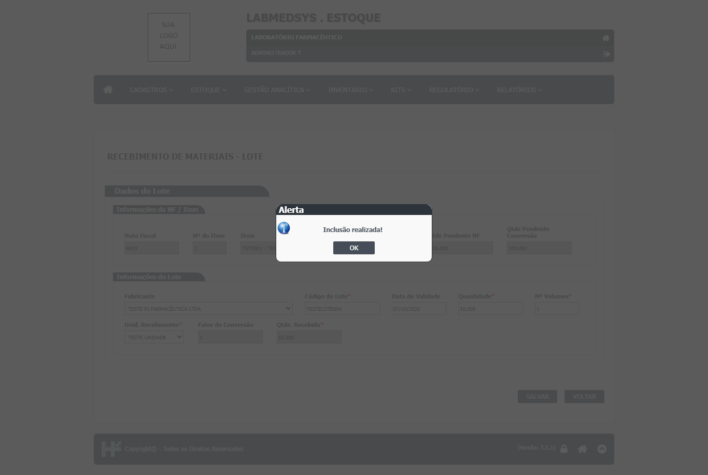
Figura 2: Depois de SALVAR: "Inclusão realizada!"
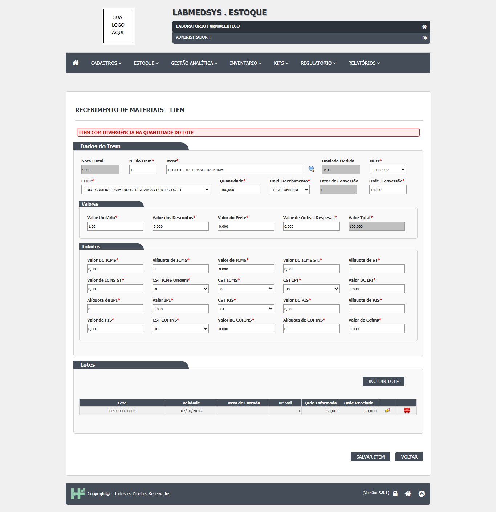
Figura 3: Grade de lotes do item com TESTELOTE004 e validade 07/10/2026
Onde está no código
Causa (confirmada): a gravação do lote confere só se a validade foi informada (para item com controle de validade) e se é uma data válida. Não há nenhuma comparação com a data atual ou com a data do recebimento.
| Arquivo | Linhas | O que faz |
|---|---|---|
LaboSys_UI/estoque/recebimentoNfItemLote_ed.aspx.cs |
471-484 | Validações da validade: obrigatória e data válida; nada sobre data vencida. |
LaboSys_UI/estoque/recebimentoNfItemLote_ed.aspx.cs |
490 | Grava a validade digitada (ou 31/12/2099 quando vazia, para item sem controle de validade). |
Caminhos a partir da pasta app/ do módulo (3.estoque/app).
Sugestão de correção
- Recusar validade menor que a data do recebimento (ou que a data de hoje), com mensagem que diga o motivo.
- Avisar também quando a validade estiver próxima (prazo mínimo de validade definido pela Qualidade), se a área pedir. Ponto para validar.
- Fazer a mesma conferência no servidor (BLL), e não só na tela, para valer também na importação de XML.
- Se o negócio precisar registrar a entrada de um vencido (por exemplo, para devolução), exigir justificativa e deixar o lote bloqueado, sem saldo disponível.
Como confirmar a correção
Repetir o CT-EST-186 com validade de ontem (deve recusar) e com validade futura (deve aceitar). Conferir também a alteração de um lote existente para uma data vencida.
Observações
Gravidade proposta pelo agente como Média e elevada para Alta na revisão (relatório consolidado). Sem essa barreira, o vencido só seria barrado nas etapas seguintes, se for.
DV-EST-015
Finalizar a conferência dá "Erro ao redistribuir quantidade dos volumes", mas a nota fica marcada como conferida
| Gravidade | Situação | Tela | Caso de teste | Encontrado em | Norma afetada |
|---|---|---|---|---|---|
| Alta | Aberto | Estoque › Estoque › Conferência de Recebimento | CT-EST-191 e CT-EST-193 | 08/10/2026 (rodada de 08/10/2026, etapa 2 (recebimento e quarentena)) | RDC 658/2022, art. 183 (verificação de cada entrega documentada) |
O que acontece
Ao clicar em FINALIZAR na Conferência, aparece "Erro ao redistribuir quantidade dos volumes" (22,8 s), tanto com quantidade divergente (90 de 100) quanto com a quantidade igual à da nota (100 de 100). Mesmo com o erro, a nota passa a aparecer como Conferido = SIM na lista, e a tela só oferece "Cancelar conferência". O código marca a nota como conferida e grava antes de ajustar os volumes, sem uma transação que junte as duas gravações. Além disso, uma divergência de quantidade é aceita só com "Deseja Continuar?", sem justificativa nem aviso à Garantia da Qualidade.
Como reproduzir
- Abrir Estoque › Conferência de Recebimento, clicar em PESQUISAR e abrir o recebimento 00016 (NF 9006).
- Clicar no lápis do lote
TESTELOTE002; em Conferido digitar90e clicar em CONFIRMAR LOTE. Aparece "Quantidade divergente. Deseja Continuar?"; clicar em SIM. - Clicar em FINALIZAR e confirmar "Deseja finalizar a conferência?".
- Cancelar a conferência, refazer com Conferido =
100(igual à nota) e clicar de novo em FINALIZAR. - Voltar à lista da Conferência e clicar em PESQUISAR.
Dados de teste usados: Recebimento 00016, NF 9006, item TST0002 - TESTE MATERIA PRIMA 2, lote TESTELOTE002 (100,000), item de entrada TA0001/26; usuário T.ADMIN (TESTE ADMIN).
Esperado e obtido
| Esperado | Obtido |
|---|---|
| Com 100 de 100, a conferência é finalizada sem erro. Se algo falhar, nada é gravado (a nota continua não conferida) e a mensagem diz o motivo. Com divergência, o sistema exige justificativa e registra/encaminha a divergência à Garantia da Qualidade. | "Erro ao redistribuir quantidade dos volumes" nas duas tentativas. A lista passa a mostrar Conferido = SIM para o recebimento 00016. Com 90 de 100, gravou "Registro alterado com sucesso!" sem pedir justificativa. |
Evidências
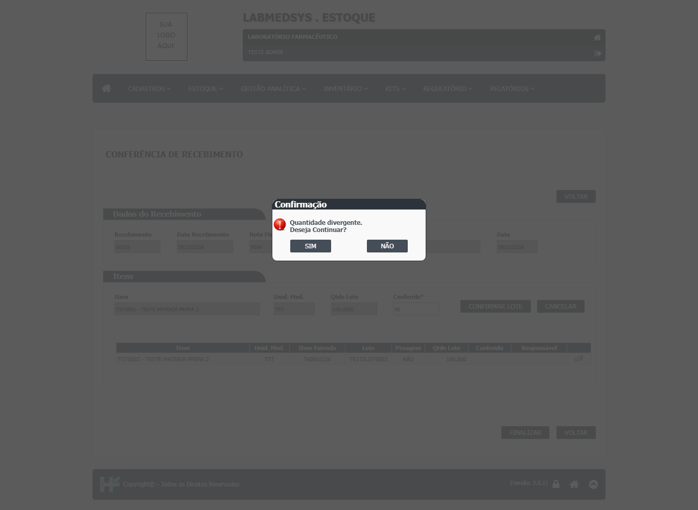
Figura 1: Conferido = 90 de 100: só a pergunta "Quantidade divergente. Deseja Continuar?", sem campo de justificativa
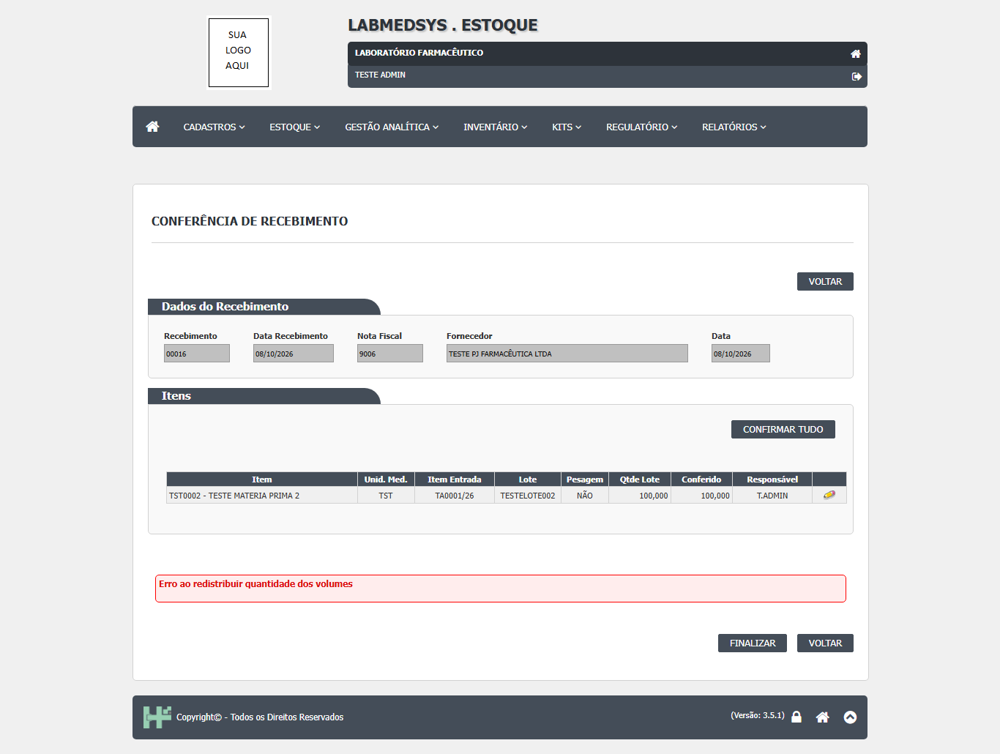
Figura 2: Conferido 100 de 100 e, ao FINALIZAR, "Erro ao redistribuir quantidade dos volumes"
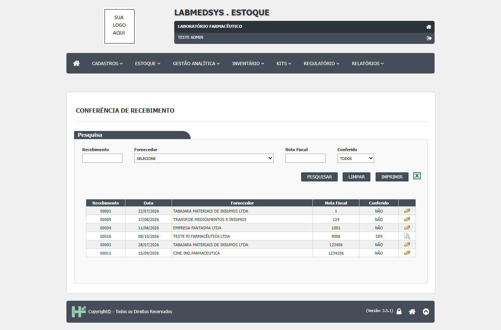
Figura 3: Lista da Conferência: o recebimento 00016 aparece como Conferido = SIM apesar do erro
Onde está no código
Causa (confirmada): A nota conferida apesar do erro está confirmada no código: a tela faz objNf.Conferido = true e grava, e só depois chama o ajuste dos volumes; as duas gravações não estão na mesma transação. O erro em si vem de um catch que esconde qualquer exceção. Com 100 de 100 o procedimento pAjustaVolume não teria o que ajustar e devolveria 1, então o erro indica falha na própria chamada (procedimento ausente ou diferente no banco de teste, ou sem permissão): provável, a confirmar com o DBA. Achado extra: quando o procedimento falha de forma controlada devolve -1, mas o código só trata 0 como erro, então essa falha passaria sem aviso.
| Arquivo | Linhas | O que faz |
|---|---|---|
LaboSys_UI/estoque/conferencia_ed2.aspx.cs |
294-306 | Marca Conferido = true e grava (295-297) antes de chamar ajustarQtdVolume (302); depois mostra "Conferência realizada com sucesso!". |
LaboSys_BLL/bllNotaFiscal.cs |
252-268 | ajustarQtdVolume: o catch troca qualquer exceção por "Erro ao redistribuir quantidade dos volumes". |
LaboSys_DAL/dalNotaFiscal.cs |
895-914 | Executa pAjustaVolume e só considera erro o retorno 0; o procedimento devolve -1 quando falha. |
LaboSys_UI/estoque/conferencia_ed2.aspx.cs |
159-165, 380-381, 424-428 | Divergência: só pergunta "Quantidade divergente. Deseja Continuar?" e, com SIM, salva sem pedir justificativa. |
Caminhos a partir da pasta app/ do módulo (3.estoque/app).
Sugestão de correção
- Fazer a marcação de conferido e o ajuste dos volumes numa única transação: ou grava tudo, ou não grava nada.
- Tratar como erro qualquer retorno diferente de 1 de
pAjustaVolume(inclusive -1) e registrar no log o erro real em vez de escondê-lo nocatch. - Com divergência de quantidade, exigir justificativa (motivo) e registrar quem conferiu, quando e por quê; comportamento esperado pela norma: a divergência fica documentada e é comunicada à Garantia da Qualidade.
- "Cancelar conferência" também deve pedir justificativa e ficar registrado.
- Conferir com o DBA se
pAjustaVolumeexiste no banco de teste, igual ao do código, e se o usuário da aplicação pode executá-lo.
Como confirmar a correção
Repetir o CT-EST-193 (100 de 100: deve finalizar sem erro e mostrar Conferido = SIM) e o CT-EST-191 (90 de 100: deve exigir justificativa). Forçar uma falha no ajuste e conferir que a nota continua Conferido = NÃO.
Observações
A grafia do aviso "cacelar" na confirmação de "Cancelar conferência" também precisa ser corrigida. A mensagem "Item com divergência na quantidade do lote!" vista em 07/10 não apareceu nesta rodada. Possível ligação com o DV-EST-016 (ponto para validar).
DV-EST-016
Endereçamento mostra "sucesso", mas nada foi gravado: lote sem saldo, sem histórico e sem análise no CQ
| Gravidade | Situação | Tela | Caso de teste | Encontrado em | Norma afetada |
|---|---|---|---|---|---|
| Alta | Aberto | Estoque › Estoque › Endereçamento de Material | CT-EST-194 e CT-EST-197 | 08/10/2026 (rodada de 08/10/2026, etapa 2 (recebimento e quarentena)) | RDC 658/2022, art. 157 (quarentena logo após o recebimento) e art. 124 (registro de cada ação quando é feita) |
O que acontece
Ao clicar em FINALIZAR no Endereçamento, a tela mostra "Endereçamento Finalizado com sucesso!". Mas depois disso: a nota continua com Endereçado = NÃO e a tela reabre com o botão FINALIZAR; a Disponibilidade do Lote e o Histórico do Lote não mostram nada; e nenhuma solicitação de análise chega ao Controle da Qualidade. O procedimento do banco que faz tudo isso numa só transação (pFinalizaRecebimento) desfaz tudo quando falha, e a tela nunca confere se ele deu certo. Resultado: o sistema diz que o material entrou em quarentena e foi para o CQ quando nada aconteceu, e o fluxo recebimento → quarentena → análise → liberação fica sem saída.
Como reproduzir
- Ter um recebimento autorizado, confirmado e com a conferência finalizada (no teste: recebimento 00016, NF 9006; ver DV-EST-015).
- Abrir Estoque › Endereçamento de Material, clicar em PESQUISAR e abrir a NF 9006.
- Em Informações do Endereçamento, escolher Item, Lote/Validade, Almoxarifado
TESTE ALMOX, Local902 - TESTE LOCAL QUARENTENA, Rua, Coluna e Andar; em Qtde Endereçar digitar100e clicar em ENDEREÇAR. - Com Pendente = 0,000, clicar em FINALIZAR e confirmar.
- Voltar à lista do Endereçamento e pesquisar: a NF 9006 continua com Endereçado = NÃO.
- Abrir Estoque › Disponibilidade do Lote com Código do Item
TST0002e clicar em PESQUISAR; abrir também Histórico do Lote comTA0001/26. - No módulo Controle da Qualidade, abrir Solicitação de Análise e procurar o lote
TA0001/26.
Dados de teste usados: Item TST0002 - TESTE MATERIA PRIMA 2 (com Controle de Qualidade e análise química); recebimento 00016, NF 9006, lote TESTELOTE002 (100,000, validade 07/10/2028), item de entrada TA0001/26; endereço L902-R901-C901-A901 no local 902 - TESTE LOCAL QUARENTENA do almoxarifado TESTE ALMOX (00017).
Esperado e obtido
| Esperado | Obtido |
|---|---|
| Só mostrar sucesso quando o lote estiver no estoque, em quarentena, com saldo de 100, com o histórico registrado, a nota marcada como endereçada e a solicitação de análise aberta no CQ. Se qualquer parte falhar, mostrar erro claro e não dizer "sucesso". | "Endereçamento Finalizado com sucesso!" (7,7 s). Depois: lista com Endereçado = NÃO; Disponibilidade do Lote: "A pesquisa não retornou nenhum resultado."; Histórico do Lote vazio; nenhuma solicitação de análise no CQ nem na tela "Análise de controle" do Estoque. |
Evidências
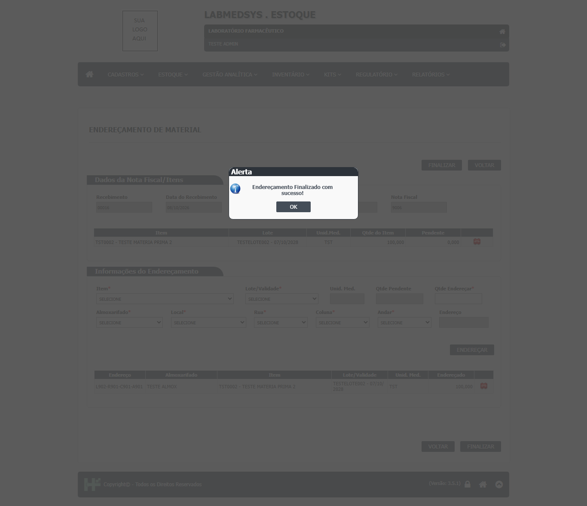
Figura 1: Depois de FINALIZAR: "Endereçamento Finalizado com sucesso!"
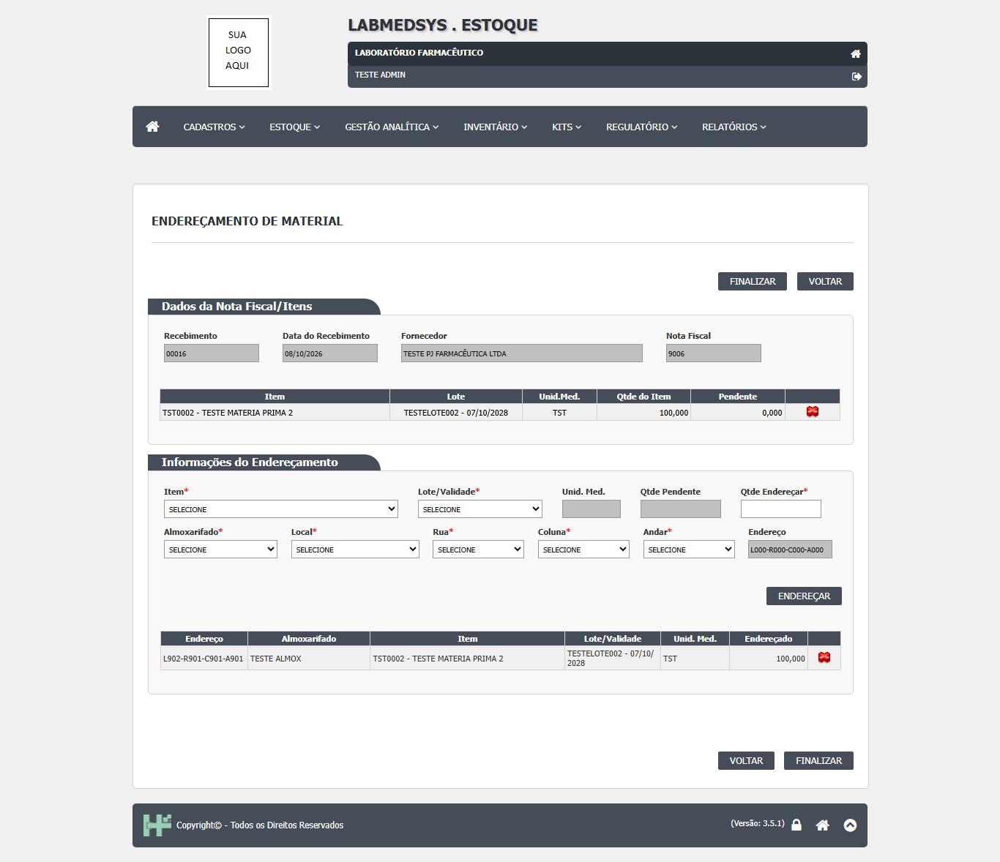
Figura 2: A mesma nota reaberta: continua pendente de finalização, com o botão FINALIZAR
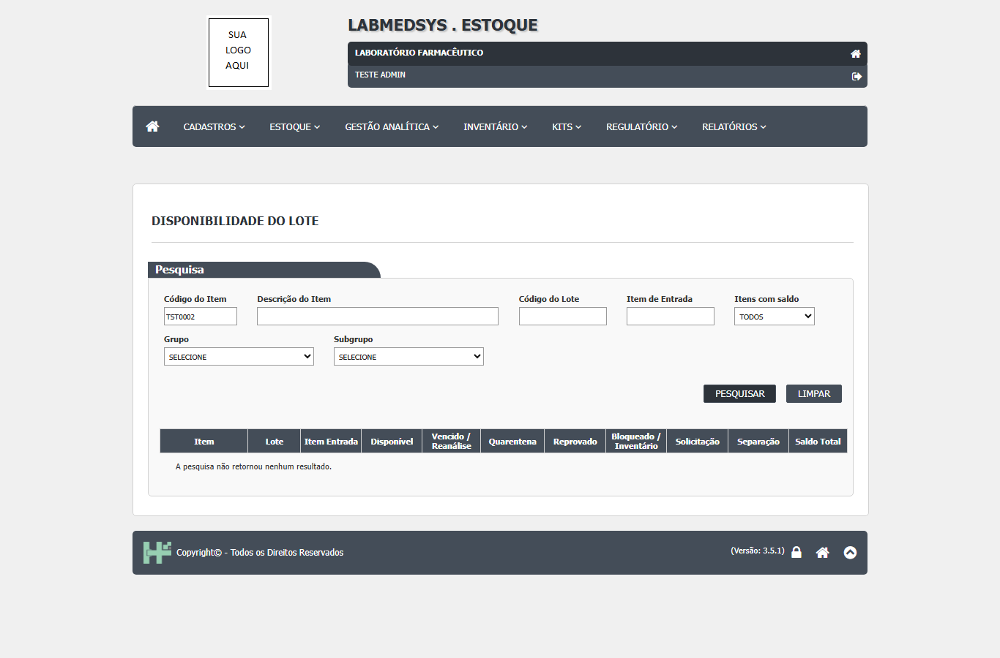
Figura 3: Disponibilidade do Lote para o item TST0002: nenhum resultado (saldo zero)
Onde está no código
Causa (confirmada): A mensagem de sucesso falsa está confirmada no código. O procedimento pFinalizaRecebimento faz tudo numa transação (cria o lote, a movimentação que dá saldo, os volumes, a solicitação de análise e marca a nota como endereçada) e, se der erro, desfaz tudo e devolve -1 com RETURN; ele não devolve nenhuma tabela. O acesso a dados (confirmaEnderecamento) tenta ler a primeira linha de uma tabela que não vem e, no erro, devolve 0: o valor é sempre 0, dê certo ou não. A tela nem olha esse valor e mostra o sucesso. Ainda desconhecida: a causa da falha dentro do banco (pergunta ao DBA). A mais provável é a mesma família do DV-EST-015 (volumes), mas não foi isolada.
| Arquivo | Linhas | O que faz |
|---|---|---|
LaboSys_UI/estoque/enderecamento_ed.aspx.cs |
127-133 | Chama confirmarEnderecamento, guarda o retorno em iRet e não confere; depois mostra "Endereçamento Finalizado com sucesso!". |
LaboSys_DAL/dalNotaFiscal.cs |
763-781 | confirmaEnderecamento executa pFinalizaRecebimento e lê Rows[0][0] de uma tabela que o procedimento não devolve; no erro, retorna 0. |
Hsolutions.Estoque.DB/Stored Procedures/pFinalizaRecebimento.sql |
60, 269, 290-291, 335-346 | Abre a transação, grava a análise do CQ e marca ENDERECADO = 1; em erro faz ROLLBACK e RETURN '-1', sem mensagem. |
LaboSys_BLL/bllNotaFiscal.cs |
211-223 | confirmarEnderecamento troca qualquer exceção por uma mensagem genérica, perdendo o erro real. |
Caminhos a partir da pasta app/ do módulo (3.estoque/app).
Sugestão de correção
- Fazer o procedimento devolver o resultado de forma que a aplicação leia (parâmetro de saída ou
SELECTdo código de retorno) e, em erro, levantar a mensagem real (THROW/RAISERROR) em vez de sóRETURN '-1'. - Na tela, só mostrar sucesso quando o retorno for positivo; em qualquer outro caso, mostrar o erro e manter a nota como pendente.
- Registrar no log da aplicação o texto do erro do banco (hoje ele é descartado nas camadas BLL e DAL).
- Comportamento esperado pela norma: ao finalizar, o lote fica com saldo em quarentena, o histórico registra a entrada, e a solicitação de análise nasce no CQ. Se uma dessas partes falhar, nenhuma é gravada e o usuário é avisado.
- Depois de corrigir a mensagem, descobrir com o DBA o erro real de
pFinalizaRecebimentopara a NF 9006 e corrigir a causa.
Como confirmar a correção
Repetir o CT-EST-194 (endereçar e finalizar) e o CT-EST-197 (Histórico e Disponibilidade do Lote) com um recebimento novo. Conferir: nota com Endereçado = SIM; saldo 100 em quarentena; histórico com a entrada; solicitação de análise visível no CQ (libera os casos CT-EST-200 a 209). Forçar uma falha (por exemplo, no banco de teste) e conferir que a tela mostra erro, não sucesso.
Observações
Bloqueia os casos CT-EST-200 a 209 (quarentena, amostragem, laudo e liberação). Pode ser consequência do DV-EST-015 (conferência marcada como feita sem o ajuste dos volumes); ponto para validar com o DBA executando pFinalizaRecebimento para a NF 9006. Também pode ter relação com o gatilho trg_Conferido, desligado no código.
DV-EST-001
Código do lote perde os hífens: "TESTE-LOTE-001" vira "TESTELOTE001"
| Gravidade | Situação | Tela | Caso de teste | Encontrado em | Norma afetada |
|---|---|---|---|---|---|
| Média | Aberto | Estoque › Estoque › Recebimento de Material › Nota Fiscal › Item › Lote | Preparação do recebimento; reconfirmado no CT-EST-187 em 08/10/2026 | 07/10/2026 (rodada de 07/10/2026 (preparação) e 08/10/2026, etapa 1) | RDC 658/2022, art. 141, V (registro com o lote do fabricante) |
O que acontece
No campo Código do Lote, o hífen digitado é descartado sem aviso: TESTE-LOTE-001 foi gravado como TESTELOTE001 e TESTE-LOTE-002 como TESTELOTE002. O campo só aceita letras, números e espaço. O registro de entrada deixa de trazer o lote do fabricante como ele é, o que atrapalha a rastreabilidade (busca, comparação com o laudo do fabricante, recolhimento).
Como reproduzir
- Abrir Estoque › Recebimento de Material, um recebimento em aberto, a nota fiscal e o item.
- Clicar em INCLUIR LOTE.
- No campo Código do Lote, digitar
TESTE-LOTE-002. - Preencher os demais campos e clicar em SALVAR.
Dados de teste usados: Recebimento 00013 (NF 9001, lote gravado como TESTELOTE001) e recebimento 00014 (NF 9002, lote gravado como TESTELOTE002); item TST0001 - TESTE MATERIA PRIMA.
Esperado e obtido
| Esperado | Obtido |
|---|---|
| Guardar o código exatamente como digitado (com hífens, barras, pontos e outros caracteres usados por fabricantes). | O campo mostra e grava TESTELOTE002, sem os hífens e sem aviso. |
Evidências
Figura 1: Digitado TESTE-LOTE-002: o campo Código do Lote mostra TESTELOTE002
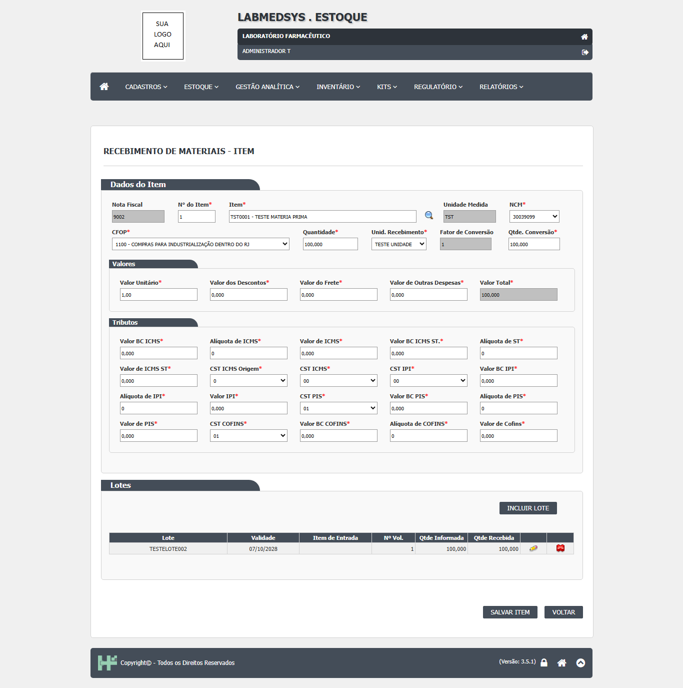
Figura 2: Grade de lotes do item: lote gravado como TESTELOTE002
Onde está no código
Causa (confirmada): o campo tem um filtro de caracteres (FilteredTextBoxExtender) que só deixa passar letras sem acento, números e espaço. Achado extra no mesmo filtro: a lista de maiúsculas não tem a letra W ("...UVXYZ"), então um lote com W maiúsculo também seria alterado.
| Arquivo | Linhas | O que faz |
|---|---|---|
LaboSys_UI/estoque/recebimentoNfItemLote_ed.aspx |
319-323 | txtCodLote com ValidChars só de letras, números e espaço; falta o W maiúsculo. |
LaboSys_UI/estoque/recebimentoNfItemLote_ed.aspx.cs |
486 | Grava o texto do campo em maiúsculas, como chegou. |
Caminhos a partir da pasta app/ do módulo (3.estoque/app).
Sugestão de correção
- Retirar o filtro de caracteres do código do lote, ou ampliá-lo para os caracteres que os fabricantes usam (hífen, barra, ponto, sublinhado), incluindo a letra W.
- Se algum caractere tiver de ser recusado, avisar o usuário em vez de descartá-lo em silêncio.
- Verificar se o mesmo filtro existe em outras telas que recebem o lote (por exemplo, importação de XML e telas de lote do Principal, DV-PRI-001).
Como confirmar a correção
Repetir o CT-EST-187 com TESTE-LOTE-010 e com um código com W maiúsculo: o lote deve ser gravado e mostrado exatamente como digitado.
Observações
Mesma família do DV-PRI-001 do módulo Principal (o "_" é removido em alguns campos).
DV-EST-002
Quantidade do lote: digitar 100 grava 0,100
| Gravidade | Situação | Tela | Caso de teste | Encontrado em | Norma afetada |
|---|---|---|---|---|---|
| Média | Aberto | Estoque › Estoque › Recebimento de Material › Nota Fiscal › Item › Lote | Preparação do recebimento; reconfirmado no CT-EST-187 em 08/10/2026 | 07/10/2026 (rodada de 07/10/2026 (preparação) e 08/10/2026, etapa 1) | RDC 658/2022, art. 141, VI (quantidade recebida no registro de entrada) |
O que acontece
O campo Quantidade do lote tem uma máscara que trata os últimos 3 dígitos como casas decimais: digitar 100 vira 0,100. O erro só aparece no fim, ao finalizar o recebimento, como "Item com divergência na quantidade do lote!". Para gravar 100 é preciso digitar 100000 ou 100,000. Há risco de registrar a quantidade errada.
Como reproduzir
- Abrir Estoque › Recebimento de Material, um recebimento em aberto, a nota fiscal e o item (quantidade 100).
- Clicar em INCLUIR LOTE.
- No campo Quantidade, digitar
100. - Observar o campo e o campo Qtde. Recebida; clicar em SALVAR.
Dados de teste usados: Recebimento 00013, NF 9001, item TST0001 - TESTE MATERIA PRIMA (100 TST), lote TESTELOTE001.
Esperado e obtido
| Esperado | Obtido |
|---|---|
Digitar 100 grava 100 (100,000). As casas decimais só entram quando o usuário digita a vírgula. |
O campo mostra 0,100 e a Qtde. Recebida 0,100. Foi preciso alterar o lote para 100,000 ("Alteração realizada!"). |
Evidências
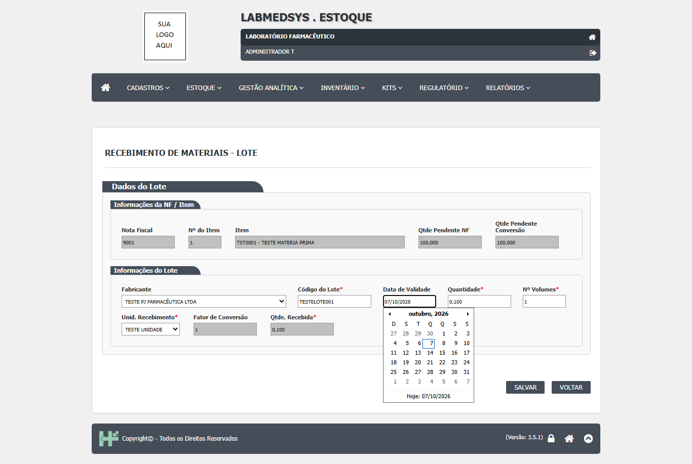
Figura 1: Digitado 100: o campo Quantidade mostra 0,100 e a Qtde. Recebida 0,100
Figura 2: Correção manual para 100,000: "Alteração realizada!"
Onde está no código
Causa (confirmada): a função de máscara fmCampoVal(campo, evt, 3) remove tudo que não é número e sempre coloca a vírgula antes dos 3 últimos dígitos (1 dígito vira 0,00X; 3 dígitos viram 0,XXX). No servidor, o valor é lido tirando os pontos, sem outra conferência.
| Arquivo | Linhas | O que faz |
|---|---|---|
LaboSys_UI/estoque/recebimentoNfItemLote_ed.aspx |
34-44, 68-78 | fmCampoVal: filtra só números e monta as casas decimais a partir dos últimos dígitos. |
LaboSys_UI/estoque/recebimentoNfItemLote_ed.aspx |
350-351 | Campo Quantidade usa a máscara com 3 casas a cada tecla e ao sair do campo. |
LaboSys_UI/estoque/recebimentoNfItemLote_ed.aspx.cs |
487 | Converte o texto para número tirando os pontos. |
Caminhos a partir da pasta app/ do módulo (3.estoque/app).
Sugestão de correção
- Usar uma máscara numérica em que o número digitado é inteiro até o usuário digitar a vírgula.
- Ao salvar o lote, avisar na hora quando a quantidade do lote não bate com a do item (hoje só aparece ao finalizar).
- Revisar as outras telas que usam a mesma função (
fmCampoValaparece copiada em várias páginas).
Como confirmar a correção
Repetir o CT-EST-187 digitando 100 sem vírgula: o lote deve gravar 100,000. Testar também 1,5 (deve gravar 1,500).
Observações
A mesma máscara com 2 casas é usada nos valores da nota fiscal; não foi vista falha lá, mas vale conferir.
DV-EST-004
Checklist de inspeção veicular não mostra as opções de resposta e salva "Aprovado" sem nenhuma resposta
| Gravidade | Situação | Tela | Caso de teste | Encontrado em | Norma afetada |
|---|---|---|---|---|---|
| Média | Aberto | Estoque › Estoque › Checklist de Inspeção Veicular | Preparação do recebimento; reteste CT-EST-181 em 08/10/2026 | 07/10/2026 (rodada de 07/10/2026 (preparação) e 08/10/2026, etapa 1) | RDC 658/2022, art. 183, parágrafo único (verificações de cada entrega documentadas) |
O que acontece
No Checklist, a coluna Avaliação das 15 perguntas aparece vazia: não há opção para responder. Mesmo assim, o registro é salvo com Parecer Aprovado ("Registro cadastrado com sucesso!"). A inspeção pode ser "aprovada" sem ter sido feita, e não há como provar o que foi verificado.
Como reproduzir
- Abrir Estoque › Checklist de Inspeção Veicular e clicar em Incluir.
- Preencher Placa
TST2222, CondutorTESTE CONDUTOR, Tipo de Documento CPF, Nº Documento, Tipo Movimento DESCARGA, Cliente/Fornecedor, Transportadora e Nota Fiscal. - Observar a coluna Avaliação das perguntas 1 a 11 (15 linhas): está vazia.
- Em Parecer, marcar Aprovado e clicar em SALVAR REGISTRO.
Dados de teste usados: Checklists 00003 (placa TST-1234, 07/10) e 00004 (placa TST2222, 08/10), condutor TESTE CONDUTOR, fornecedor TESTE PJ FARMACÊUTICA LTDA, transportadora TRANSLOG TRANSPORTES.
Esperado e obtido
| Esperado | Obtido |
|---|---|
| Cada pergunta mostra as opções de resposta (por exemplo, Sim/Não/Não se aplica) e o registro só é salvo com todas respondidas. Parecer "Aprovado" não é aceito se alguma resposta indicar problema sem justificativa. | Coluna Avaliação vazia; "Registro cadastrado com sucesso!" com Parecer Aprovado e nenhuma resposta. |
Evidências
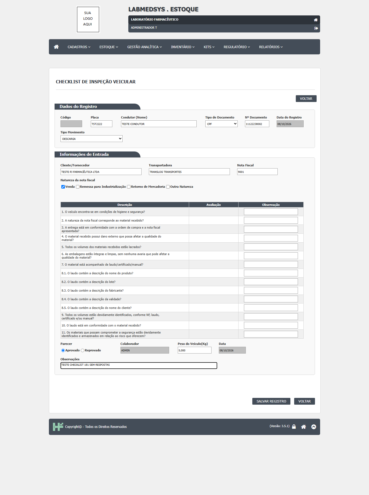
Figura 1: Formulário com Parecer Aprovado; a coluna Avaliação está vazia em todas as perguntas
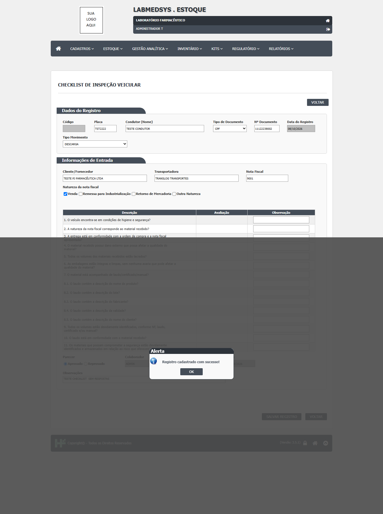
Figura 2: Depois de SALVAR REGISTRO: "Registro cadastrado com sucesso!"
Onde está no código
Causa (provável): Confirmado no código: ao salvar, a tela lê a resposta de cada pergunta e, se estiver vazia, simplesmente segue em frente; o Parecer é gravado sem relação com as respostas. Provável (a investigar): a coluna vazia vem de perguntas sem respostas cadastradas no banco, porque a lista de opções de cada linha é montada a partir de Respostas da pergunta. Conferir com o DBA o cadastro de respostas das perguntas do checklist.
| Arquivo | Linhas | O que faz |
|---|---|---|
LaboSys_UI/estoque/portaria_ed2.aspx.cs |
263 | Grava o Parecer (Aprovado/Reprovado) sem conferir as respostas. |
LaboSys_UI/estoque/portaria_ed2.aspx.cs |
275-288 | Para cada pergunta, se a resposta vier vazia, nada acontece: não há recusa. |
LaboSys_UI/estoque/portaria_ed2.aspx.cs |
476-497 | Monta as opções de cada linha a partir de Respostas da pergunta; sem respostas cadastradas, a coluna fica vazia. |
Caminhos a partir da pasta app/ do módulo (3.estoque/app).
Sugestão de correção
- Garantir que cada pergunta do checklist tenha as opções de resposta (cadastro ou carga inicial) e que elas apareçam na coluna Avaliação.
- Recusar o salvamento se alguma pergunta não for respondida, dizendo qual.
- Impedir Parecer "Aprovado" quando alguma resposta indicar problema, ou exigir justificativa nesse caso.
- Fazer a validação no servidor, não só na tela.
Como confirmar a correção
Repetir o CT-EST-181: com nenhuma resposta, o sistema deve recusar; com todas respondidas, deve gravar e mostrar as respostas ao reabrir o checklist.
Observações
A placa e o número do documento têm máscara. O mesmo comportamento foi visto em 07/10 (checklist 00003) e em 08/10 (00004 e 00005).
DV-EST-010
"Confirmar recebimento" falha com erro genérico quando o item não tem almoxarifado de identificação
| Gravidade | Situação | Tela | Caso de teste | Encontrado em | Norma afetada |
|---|---|---|---|---|---|
| Média | Aberto | Estoque › Estoque › Recebimento de Material (botão CONFIRMAR RECEBIMENTO) | Confirmar recebimento dos recebimentos 00013, 00014 e 00016 | 08/10/2026 (rodada de 08/10/2026, etapas 1 e 2) | RDC 658/2022, art. 141 (registro de cada entrega recebida) |
O que acontece
Depois de autorizado, o recebimento precisa do botão CONFIRMAR RECEBIMENTO. Para o item TESTE MATERIA PRIMA, que foi salvo sem "Almoxarifado de Identificação", o botão falhou quatro vezes com "Erro ao Finalizar Recebimento!", depois de 23 a 26 s. Com o item TST0002, que tem esse campo preenchido, o mesmo botão funcionou em 4,5 s. O cadastro do item deixa salvar sem esse campo (que não tem asterisco), o campo fica travado depois que o item tem movimento, e o recebimento não diz o que falta.
Como reproduzir
- Em Cadastros › Item, ter um item com Almoxarifado de Identificação = SELECIONE (no teste,
TST0001 - TESTE MATERIA PRIMA). - Em Estoque › Recebimento de Material, criar o recebimento com NF, item e lote, clicar em FINALIZAR e autorizar com outro usuário.
- Clicar em CONFIRMAR RECEBIMENTO e confirmar.
- Repetir com um item que tem Almoxarifado de Identificação =
TESTE ALMOX(no teste,TST0002, recebimento 00016).
Dados de teste usados: Itens TST0001 - TESTE MATERIA PRIMA (sem almoxarifado de identificação) e TST0002 - TESTE MATERIA PRIMA 2 (com TESTE ALMOX); recebimentos 00013 (NF 9001) e 00014 (NF 9002) com erro; 00016 (NF 9006) que passou; almoxarifado TESTE ALMOX (00017) com lote identificado, sigla TA.
Esperado e obtido
| Esperado | Obtido |
|---|---|
| O cadastro do item exige o almoxarifado de identificação quando o item vai ser recebido (ou o recebimento usa outro dado), e, se faltar algo, a mensagem diz exatamente o quê (por exemplo, "Item TST0001 sem almoxarifado de identificação"). | "Erro ao Finalizar Recebimento!" nos recebimentos 00013 e 00014, em 23 a 26 s. No 00016: "Recebimento finalizado!" em 4,5 s, status RECEBIDO, item de entrada TA0001/26. |
Evidências
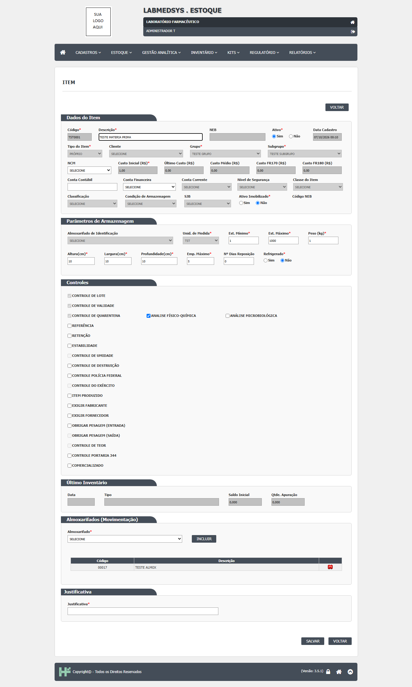
Figura 1: Item TST0001: "Almoxarifado de Identificação" = SELECIONE e travado; TESTE ALMOX só aparece em "Almoxarifados (Movimentação)"
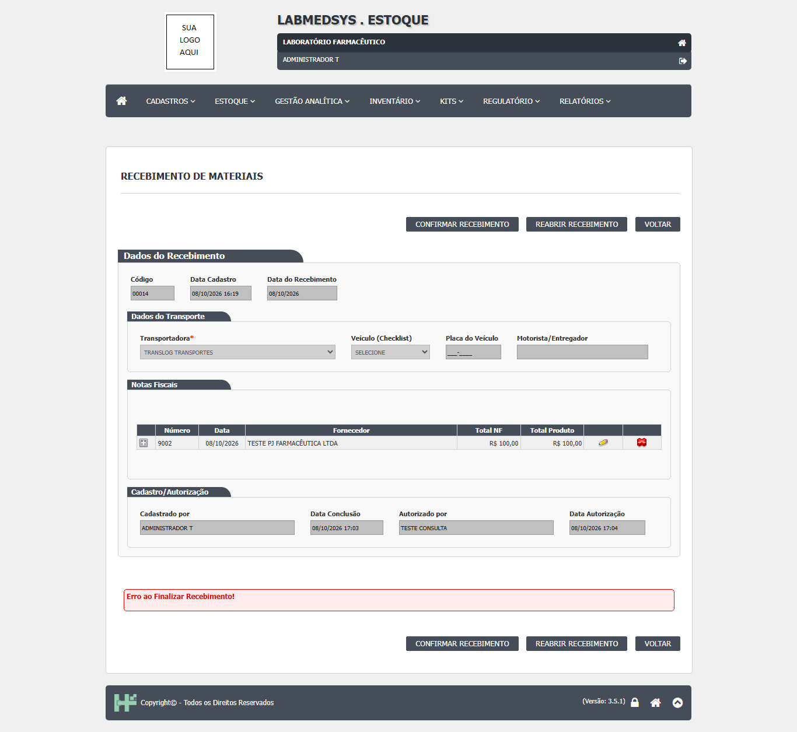
Figura 2: Recebimento 00014 autorizado; ao CONFIRMAR RECEBIMENTO: "Erro ao Finalizar Recebimento!"
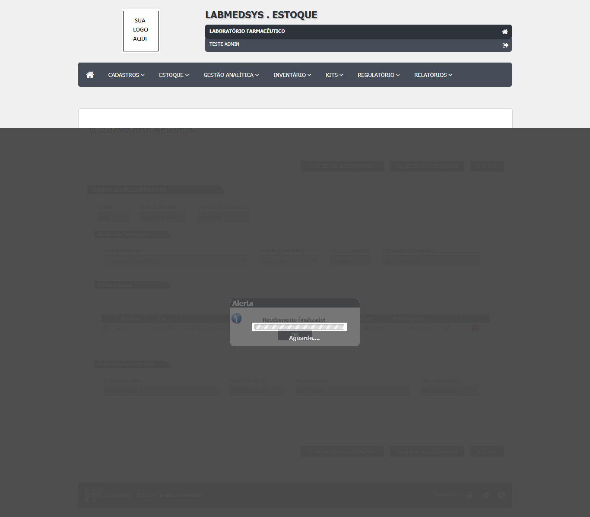
Figura 3: Recebimento 00016 (item com almoxarifado de identificação): "Recebimento finalizado!"
Onde está no código
Causa (confirmada): na confirmação, a sigla usada para gerar o item de entrada vem do almoxarifado padrão do item (LEFT JOIN em ID_ALMOXARIFADO_PADRAO). Sem ele, a sigla é nula, o item de entrada fica nulo e o código do volume também. O banco recusa, porque COD_VOLUME é obrigatório em TBL_NF_ITEM_LOTE_VOLUME. A camada de regra troca o erro por uma mensagem genérica. O texto exato da exceção do banco não foi visto (sem acesso ao banco), mas a comparação 00014 × 00016 e o código fecham a causa.
| Arquivo | Linhas | O que faz |
|---|---|---|
LaboSys_DAL/dalRecebimento.cs |
569, 582-583 | A sigla (A.COD_SIGLA) vem do almoxarifado padrão do item, por LEFT JOIN: fica nula quando o item não tem esse campo. |
LaboSys_DAL/dalRecebimento.cs |
609-635, 680-690 | Monta o item de entrada e o código do volume a partir da sigla; com sigla nula, COD_VOLUME fica nulo e o INSERT falha. |
LaboSys_BLL/bllRecebimento.cs |
229-243 | concluirRecebimento troca a exceção por "Erro ao Finalizar Recebimento!". |
LaboSys_UI/administracao/tabelas_apoio/item_ed.aspx |
311-315 | Campo "Almoxarifado de Identificação" sem asterisco e sem validação. |
LaboSys_UI/administracao/tabelas_apoio/item_ed.aspx.cs |
490, 819 | Salva o item com qualquer valor (inclusive SELECIONE) e trava o campo quando o item já tem movimento. |
Caminhos a partir da pasta app/ do módulo (3.estoque/app).
Sugestão de correção
- No cadastro do item, tornar o Almoxarifado de Identificação obrigatório para itens com controle de lote (ou sempre, se a área confirmar).
- Antes de confirmar o recebimento, conferir os dados de cada item e mostrar mensagem clara, com o item e o campo que falta.
- Não esconder o erro do banco: registrar a exceção no log e mostrar ao usuário uma mensagem útil.
- Permitir corrigir o campo em item com movimento, com justificativa e trilha de auditoria (hoje ele fica travado e o item não pode mais ser recebido).
- Rever o tempo de 23 a 26 s até o erro.
Como confirmar a correção
Confirmar o recebimento de um item sem almoxarifado de identificação: o cadastro do item não deve deixar salvar assim, ou o recebimento deve mostrar a mensagem com o campo que falta. Confirmar com item completo (como o 00016) e conferir que continua funcionando.
Observações
Era Alta; baixada para Média porque há contorno (preencher o campo no item). Continua importante se itens reais forem cadastrados sem ele. O nome na tela ("Almoxarifado de Identificação") é diferente do usado no código (AlmoxarifadoPadrao), e o item também tem a lista "Almoxarifados (Movimentação)": o usuário pode achar que já preencheu.
DV-EST-011
Checklist com parecer "Reprovado" aparece na lista de veículos para usar no recebimento
| Gravidade | Situação | Tela | Caso de teste | Encontrado em | Norma afetada |
|---|---|---|---|---|---|
| Média | Aberto | Estoque › Estoque › Recebimento de Material (campo Veículo (Checklist)) | CT-EST-182 | 08/10/2026 (rodada de 08/10/2026, etapa 1) | RDC 658/2022, art. 156 (problemas que afetam a qualidade investigados e relatados) e art. 183 |
O que acontece
Um checklist salvo com Parecer Reprovado (00005, placa TST9999) aparece na lista Veículo (Checklist) do Recebimento, junto com os aprovados ("00005 - TST9999"). Nada impede usar um veículo reprovado na inspeção para receber material.
Como reproduzir
- Em Estoque › Checklist de Inspeção Veicular, incluir um checklist com placa
TST9999, Parecer Reprovado, e clicar em SALVAR REGISTRO. - Abrir Estoque › Recebimento de Material e incluir um novo recebimento.
- Abrir a lista Veículo (Checklist).
Dados de teste usados: Checklist 00005 (placa TST9999, Reprovado); checklists aprovados 00003 e 00004.
Esperado e obtido
| Esperado | Obtido |
|---|---|
| Checklists reprovados não aparecem para seleção no recebimento (ou aparecem marcados e bloqueados), e o recebimento com veículo reprovado é recusado com mensagem. | A lista mostra "00005 - TST9999" junto com os aprovados. O teste não chegou a salvar um recebimento com ele. |
Evidências
Figura 1: Checklist TST9999 com Parecer Reprovado, antes de salvar
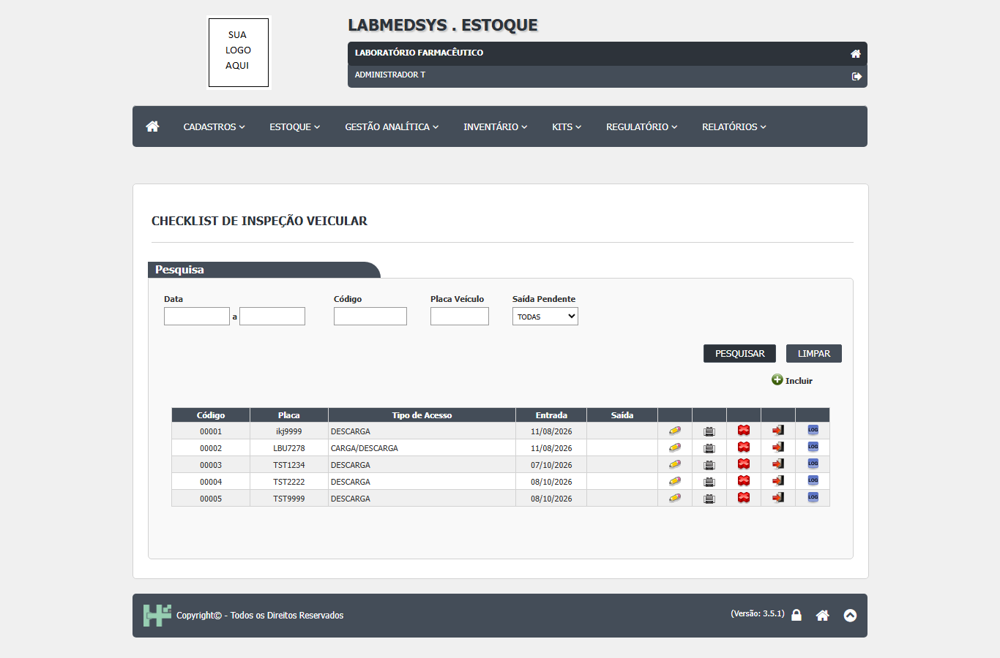
Figura 2: Lista de checklists: 00005 (TST9999) gravado
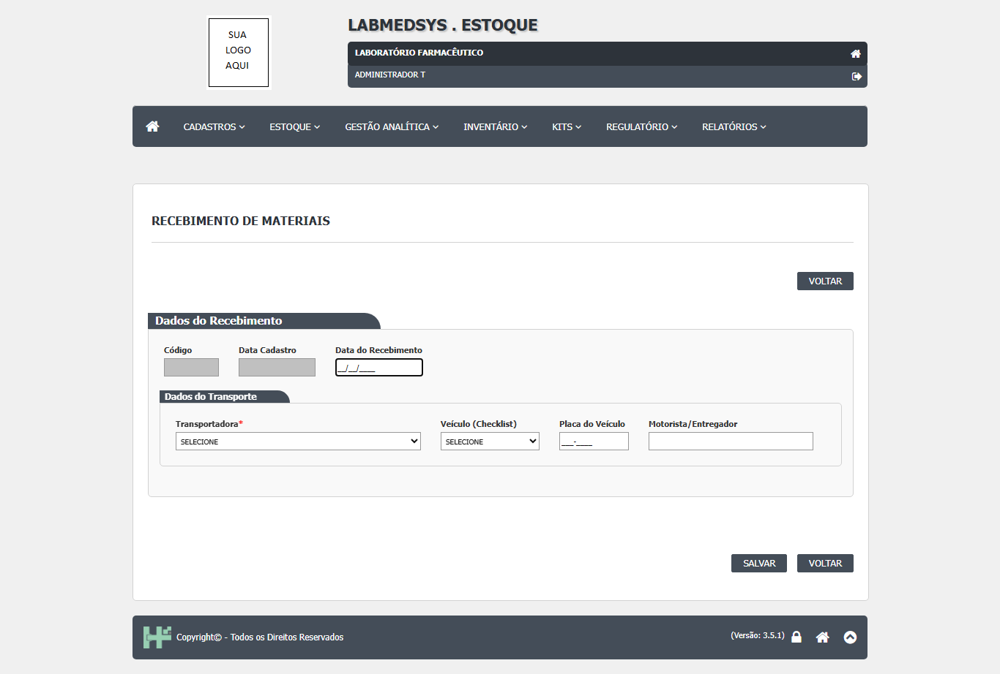
Figura 3: Recebimento novo com o campo Veículo (Checklist); o conteúdo da lista foi lido pelo roteiro do teste
Onde está no código
Causa (confirmada): as duas consultas que alimentam a lista de checklists filtram só por excluído (LIXEIRA), empresa e, na versão "pendente", por saída e uso em outro recebimento. Nenhuma filtra o parecer (aprovado).
| Arquivo | Linhas | O que faz |
|---|---|---|
LaboSys_DAL/dalPortaria.cs |
394-406 | retornarLista: sem filtro de parecer; o filtro de checklist já usado está comentado. |
LaboSys_DAL/dalPortaria.cs |
345-357 | retornaListaPendente: filtra saída e uso em outro recebimento, mas não o parecer. |
LaboSys_UI/estoque/recebimento_ed2.aspx.cs |
152-160 | Recebimento novo usa retornarLista (todos os checklists); recebimento existente usa a lista "pendente". |
Caminhos a partir da pasta app/ do módulo (3.estoque/app).
Sugestão de correção
- Mostrar na lista só checklists aprovados, sem saída e ainda não usados em outro recebimento.
- Recusar no servidor um recebimento ligado a checklist reprovado, com mensagem clara.
- Comportamento esperado pela norma: veículo reprovado gera registro do problema (desvio) e o material não é recebido sem decisão da Qualidade. Ponto para validar com a Garantia da Qualidade.
- Rever a condição da linha 152: parece invertida (o recebimento novo deveria usar a lista de pendentes). Ponto para validar.
Como confirmar a correção
Repetir o CT-EST-182: o checklist 00005 (Reprovado) não deve aparecer em Veículo (Checklist); tentar forçar o uso e conferir a recusa.
Observações
Ligado ao DV-EST-004 (checklist sem respostas) e ao DV-EST-012 (checklist opcional).
DV-EST-012
Recebimento é salvo sem checklist de inspeção, sem placa e sem motorista
| Gravidade | Situação | Tela | Caso de teste | Encontrado em | Norma afetada |
|---|---|---|---|---|---|
| Média | Aberto | Estoque › Estoque › Recebimento de Material | CT-EST-183 | 08/10/2026 (rodada de 08/10/2026, etapa 1) | RDC 658/2022, art. 183, parágrafo único (verificação de cada entrega documentada) |
O que acontece
Na tela Recebimento de Materiais, só a Data do Recebimento e a Transportadora são exigidas. Com Veículo (Checklist) = SELECIONE, Placa do Veículo e Motorista/Entregador em branco, o sistema grava ("Recebimento gerado!", nº 00014). A inspeção veicular deixa de ser obrigatória.
Como reproduzir
- Abrir Estoque › Recebimento de Material e incluir um recebimento.
- Preencher só Data do Recebimento e Transportadora (
TRANSLOG TRANSPORTES); deixar Veículo (Checklist), Placa do Veículo e Motorista/Entregador vazios. - Clicar em SALVAR e confirmar com SIM.
Dados de teste usados: Recebimento 00014 (sem checklist, sem placa, sem motorista), transportadora TRANSLOG TRANSPORTES.
Esperado e obtido
| Esperado | Obtido |
|---|---|
| Exigir o checklist de inspeção (aprovado) e, por consequência, placa e motorista, antes de gravar o recebimento. Se a área quiser exceções (por exemplo, entrega por correio), exigir justificativa. Ponto para validar com a área. | "Recebimento gerado!" (nº 00014) sem checklist, placa ou motorista. |
Evidências
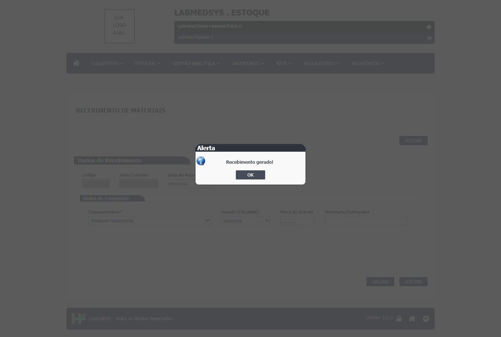
Figura 1: SALVAR sem checklist, placa e motorista: "Recebimento gerado!"
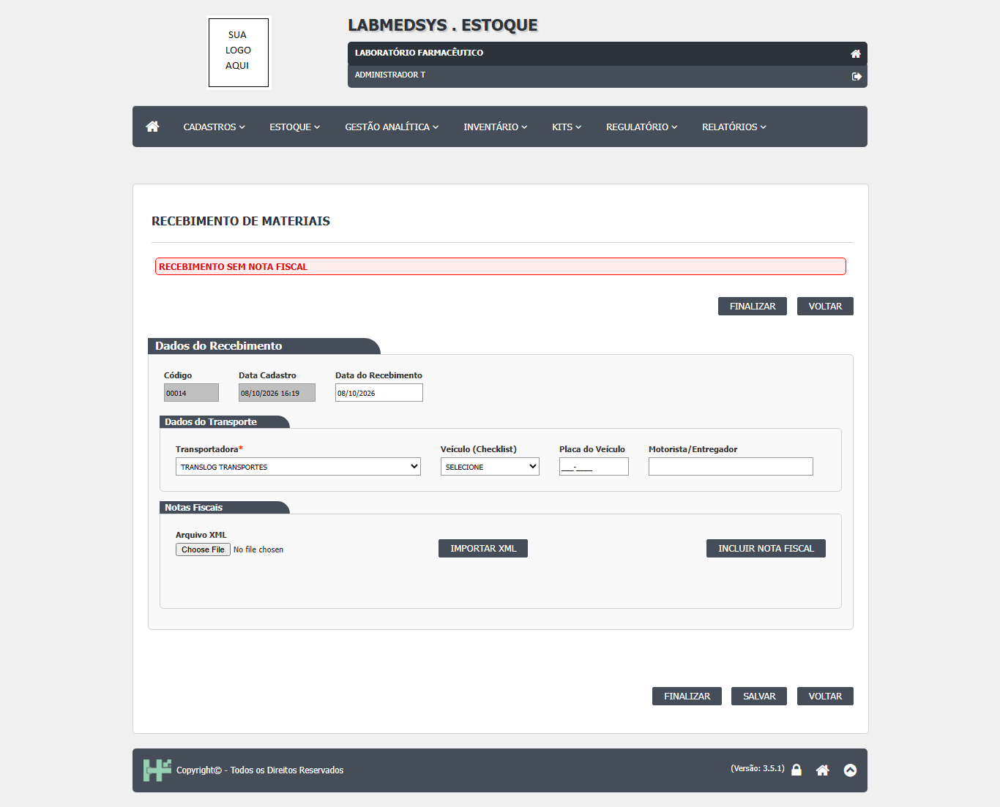
Figura 2: Recebimento 00014 gravado com Veículo (Checklist) = SELECIONE e placa e motorista vazios
Onde está no código
Causa (confirmada): os campos Veículo (Checklist), Placa do Veículo e Motorista/Entregador não têm validação na tela, e o método de salvar grava o que vier, inclusive checklist 0.
| Arquivo | Linhas | O que faz |
|---|---|---|
LaboSys_UI/estoque/recebimento_ed2.aspx |
152-182 | Veículo (Checklist), Placa e Motorista sem asterisco e sem validador (só a Transportadora tem). |
LaboSys_UI/estoque/recebimento_ed2.aspx.cs |
212-220 | salvar grava motorista, placa e checklist sem conferir se foram informados. |
Caminhos a partir da pasta app/ do módulo (3.estoque/app).
Sugestão de correção
- Tornar o checklist de inspeção obrigatório no recebimento e conferir no servidor que ele está aprovado e não foi usado em outro recebimento.
- Preencher placa e motorista a partir do checklist e não deixar editá-los à mão (hoje podem divergir do checklist).
- Se houver exceções aceitas pela Qualidade, exigir justificativa e registrar quem decidiu.
Como confirmar a correção
Repetir o CT-EST-183: sem checklist, o recebimento deve ser recusado com mensagem. Com checklist aprovado, deve gravar com placa e motorista do checklist.
Observações
Ver também DV-EST-011 (checklist reprovado na lista).
DV-EST-003
Sem a Data do Recebimento, o botão SIM não faz nada e não mostra mensagem
| Gravidade | Situação | Tela | Caso de teste | Encontrado em | Norma afetada |
|---|---|---|---|---|---|
| Baixa | Aberto | Estoque › Estoque › Recebimento de Material | Preparação do recebimento (observação 5) | 07/10/2026 (rodada de 07/10/2026 (preparação)) | Usabilidade |
O que acontece
A Data do Recebimento é obrigatória, mas a tela não avisa. Ao salvar sem ela, a confirmação aparece e o botão SIM não faz nada: não grava e não mostra mensagem.
Como reproduzir
- Abrir Estoque › Recebimento de Material e incluir um recebimento.
- Escolher a Transportadora e deixar a Data do Recebimento em branco.
- Clicar em SALVAR e depois em SIM.
Dados de teste usados: Transportadora TRANSLOG TRANSPORTES (o recebimento 00013 foi criado depois, já com a data).
Esperado e obtido
| Esperado | Obtido |
|---|---|
| Mensagem "Data do Recebimento é obrigatória!" (ou parecida), sem gravar. | O botão SIM não faz nada e nenhuma mensagem aparece. |
| ### Onde está no código |
Causa (provável): Confirmado no código: o validador da data aponta para outro campo (txtDtSolic, que não existe nesta tela) e está num grupo de validação (gpvRecebimento) que o salvar não usa (ele valida FormValidacao). Provável: com a data vazia, a conversão Convert.ToDateTime("") gera um erro de formato, que não é capturado (o catch só pega ArgumentException); numa atualização parcial da página isso fica invisível ao usuário. Investigar no console do navegador ou no log do servidor.
| Arquivo | Linhas | O que faz |
|---|---|---|
LaboSys_UI/estoque/recebimento_ed2.aspx |
110-116 | Validador da data com ControlToValidate="txtDtSolic" e ValidationGroup="gpvRecebimento"; mensagens falam de "solicitação". |
LaboSys_UI/estoque/recebimento_ed2.aspx.cs |
197-216, 238 | salvar valida o grupo FormValidacao, converte a data sem conferir se está vazia e só trata ArgumentException. |
Caminhos a partir da pasta app/ do módulo (3.estoque/app).
Sugestão de correção
- Ligar o validador ao campo certo (
txtDtRec), com mensagem sobre a data do recebimento, no grupo que o salvar usa. - No servidor, conferir se a data foi informada antes de converter e mostrar mensagem clara.
- Capturar e registrar qualquer erro inesperado, mostrando ao usuário uma mensagem em vez de não fazer nada.
- Marcar o campo com asterisco de obrigatório.
Como confirmar a correção
Incluir um recebimento sem a data e clicar em SALVAR: deve aparecer a mensagem e nada ser gravado. Com a data, deve gravar normalmente.
Observações
Sem captura da tela neste ponto; o comportamento foi registrado no resultado de 07/10/2026 (seção 4, observação 5).
DV-EST-006
Na tela do Item, alguns botões e marcações recarregam a tela e apagam os números digitados
| Gravidade | Situação | Tela | Caso de teste | Encontrado em | Norma afetada |
|---|---|---|---|---|---|
| Baixa | Aberto | Estoque › Cadastros › Item | Preparação do item TESTE MATERIA PRIMA (observação 4) | 07/10/2026 (rodada de 07/10/2026 (preparação)) | Usabilidade |
O que acontece
Ao incluir um item, o botão INCLUIR de "Almoxarifados (Movimentação)" e as marcações de controle (lote, validade, quarentena) recarregam parte da tela e apagam os números já digitados (estoque mínimo e máximo, peso, medidas). A ordem de preenchimento passa a importar. Também aparece o erro de script "$(...).nanoScroller is not a function" em várias telas do Estoque.
Como reproduzir
- Abrir Estoque › Cadastros › Item e clicar em incluir.
- Preencher os números de Parâmetros de Armazenagem (Est. Mínimo, Est. Máximo, Peso, Altura, Largura, Profundidade, Emp. Máximo).
- Marcar CONTROLE DE QUARENTENA ou, em Almoxarifados (Movimentação), escolher um almoxarifado e clicar em INCLUIR.
- Conferir os números digitados no passo 2.
Dados de teste usados: Item TST0001 - TESTE MATERIA PRIMA (grupo TESTE GRUPO, subgrupo TESTE SUBGRUPO, unidade TST, almoxarifado TESTE ALMOX).
Esperado e obtido
| Esperado | Obtido |
|---|---|
| Os valores já digitados continuam preenchidos depois de qualquer botão ou marcação. Nenhum erro de script no navegador. | Os números digitados foram apagados e precisaram ser digitados de novo. Erro de script "$(...).nanoScroller is not a function" no console do navegador. |
| ### Onde está no código |
Causa (provável): a marcação CONTROLE DE QUARENTENA e o botão INCLUIR do almoxarifado fazem ida ao servidor (AutoPostBack/botão em UpdatePanel); a forma exata como os números se perdem não foi identificada. Investigar se os campos de número com máscara estão fora dos painéis atualizados ou são reescritos no retorno. O nanoScroller não aparece no código do Estoque: deve vir de um script comum (página-mestra ou tema) que chama o componente sem carregá-lo; a investigar.
| Arquivo | Linhas | O que faz |
|---|---|---|
LaboSys_UI/administracao/tabelas_apoio/item_ed.aspx |
465-467 | CONTROLE DE QUARENTENA com AutoPostBack="True". |
LaboSys_UI/administracao/tabelas_apoio/item_ed.aspx |
664-665 | Botão INCLUIR do almoxarifado (btnNovoLocal), que faz ida ao servidor. |
Caminhos a partir da pasta app/ do módulo (3.estoque/app).
Sugestão de correção
- Manter os valores digitados nas idas ao servidor (rever os painéis atualizados e o ViewState dos campos), ou fazer essas ações sem recarregar.
- Carregar o script do
nanoScrolleronde ele é chamado, ou retirar a chamada. - Testar a tela do Item preenchendo os campos em ordens diferentes.
Como confirmar a correção
Incluir um item, preencher os números, marcar CONTROLE DE QUARENTENA e incluir um almoxarifado: os números devem continuar preenchidos; o console não deve mostrar erro de script.
Observações
Sem captura do momento em que os números somem; registrado no resultado de 07/10/2026 (seção 4, observações 4 e 8).
DV-EST-013
Nota fiscal sem a série não grava e não avisa; mensagens apontam o campo errado
| Gravidade | Situação | Tela | Caso de teste | Encontrado em | Norma afetada |
|---|---|---|---|---|---|
| Baixa | Aberto | Estoque › Estoque › Recebimento de Material › Nota Fiscal | CT-EST-184 | 08/10/2026 (rodada de 08/10/2026, etapa 1) | Usabilidade |
O que acontece
Na tela Recebimento de Materiais - Nota Fiscal, com a Série em branco, o sistema pergunta "Deseja salvar a Nota Fiscal?", repete a pergunta depois do SIM e não grava, sem nenhuma mensagem. Outras mensagens apontam o campo errado: sem o Nº da NF aparece também "Campo Série é obrigatório!" (com a série preenchida); sem a Data de Entrada aparece "Data da Nota Fiscal não informada"; sem o Total Produto aparece também "Valor do Frete da Nota Fiscal não foi informado!" (com o frete preenchido). "Tipo de Movimentacao" está sem acento.
Como reproduzir
- Abrir Estoque › Recebimento de Material, um recebimento em aberto, e clicar em INCLUIR NOTA FISCAL.
- Preencher todos os campos obrigatórios, menos a Série.
- Clicar em SALVAR NOTA FISCAL e depois em SIM.
- Repetir deixando em branco, um de cada vez, o Nº da NF, a Data de Entrada e o Total Produto, e ler as mensagens no rodapé.
Dados de teste usados: Recebimento 00015, fornecedor TESTE PJ FARMACÊUTICA LTDA, NF de teste 9004 (não gravada).
Esperado e obtido
| Esperado | Obtido |
|---|---|
| Sem a série: "Campo Série é obrigatório!" e nada gravado. Cada mensagem cita só o campo que falta. | Sem a série: a pergunta se repete e nada é gravado, sem mensagem. Sem o Total Produto: "Valor Total do Produto na Nota Fiscal não foi informado!" e "Valor do Frete da Nota Fiscal não foi informado!" com o frete preenchido. |
Evidências
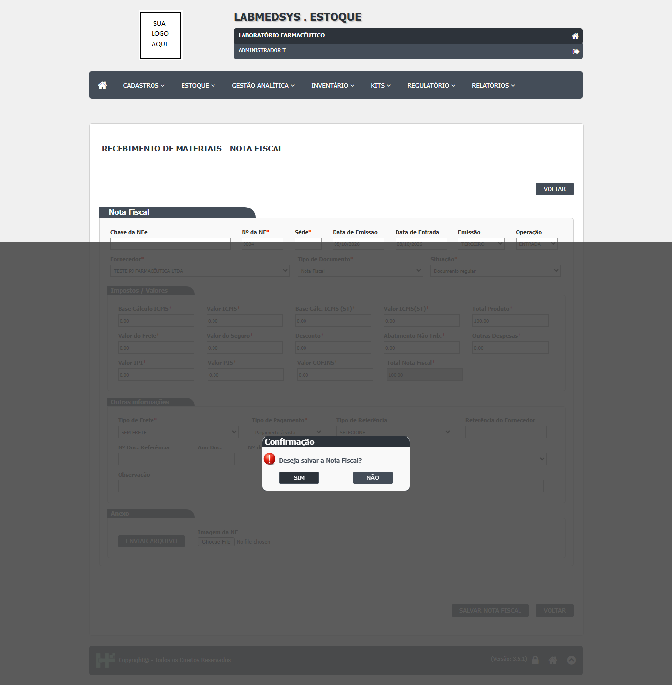
Figura 1: Série em branco: depois do SIM, a pergunta "Deseja salvar a Nota Fiscal?" aparece de novo
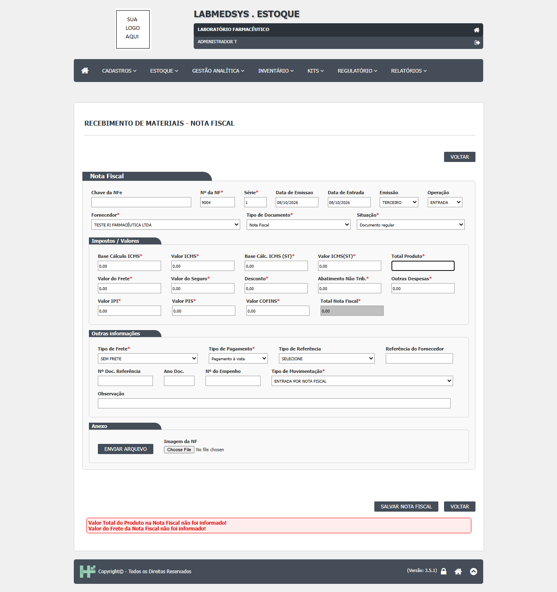
Figura 2: Sem o Total Produto: aparece também a mensagem do frete, que está preenchido
Onde está no código
Causa (confirmada): os validadores estão ligados aos campos errados: o da Série valida o Nº da NF, o do Frete valida o Total Produto, e o da Data de Entrada usa o texto da Data da Nota. Sem validador real na série, o código converte a série vazia com Convert.ToInt32 ao verificar nota repetida; esse erro de formato não é capturado (o catch só pega ArgumentException), o que explica a falta de mensagem (esta última parte é provável).
| Arquivo | Linhas | O que faz |
|---|---|---|
LaboSys_UI/estoque/recebimentoNF_ed.aspx |
261-263 | rqfvSerie ("Campo Série é obrigatório!") com ControlToValidate="txtNumNF". |
LaboSys_UI/estoque/recebimentoNF_ed.aspx |
451-453 | Validador "Valor do Frete..." com ControlToValidate="txtValTotProduto". |
LaboSys_UI/estoque/recebimentoNF_ed.aspx |
302-305 | Validador da Data de Entrada com a mensagem "Data da Nota Fiscal não informada". |
LaboSys_UI/estoque/recebimentoNF_ed.aspx.cs |
516, 525 | validarNf converte a série com Convert.ToInt32 e só trata ArgumentException. |
Caminhos a partir da pasta app/ do módulo (3.estoque/app).
Sugestão de correção
- Ligar cada validador ao seu campo: Série →
txtSerie, Frete →txtValFrete; corrigir o texto da Data de Entrada. - No servidor, conferir os campos obrigatórios antes de converter e mostrar a mensagem do campo que falta.
- Capturar e registrar erros inesperados em vez de deixar a tela sem resposta.
- Corrigir os textos sem acento ("Tipo de Movimentacao", "Data de Emissao").
Como confirmar a correção
Repetir o CT-EST-184 campo a campo: cada falta deve gerar só a mensagem do próprio campo; sem a série, a mensagem deve aparecer e nada ser gravado.
Observações
No mesmo caso, o item repetido na nota foi recusado só pela soma dos valores; a recusa por item repetido não foi isolada (ponto para validar num novo teste com nota de valor maior).